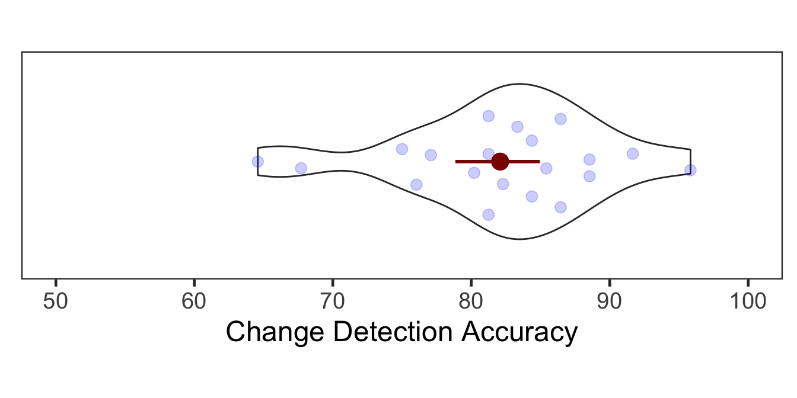
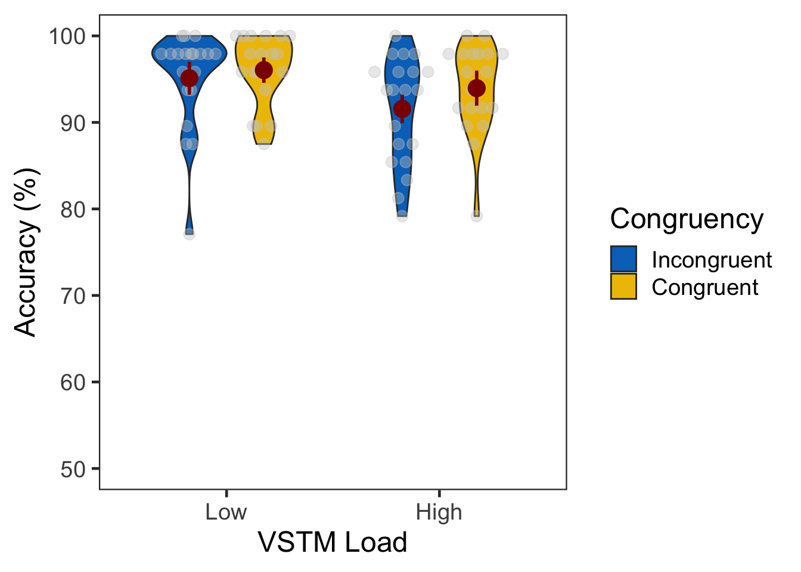
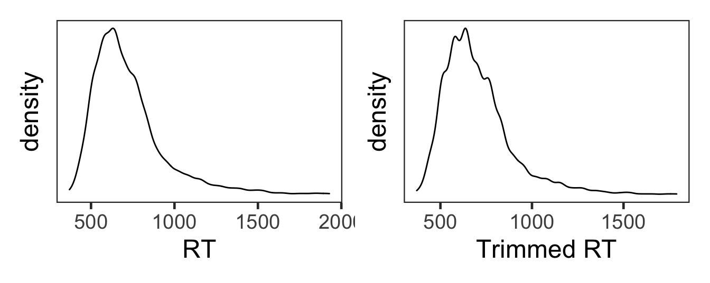
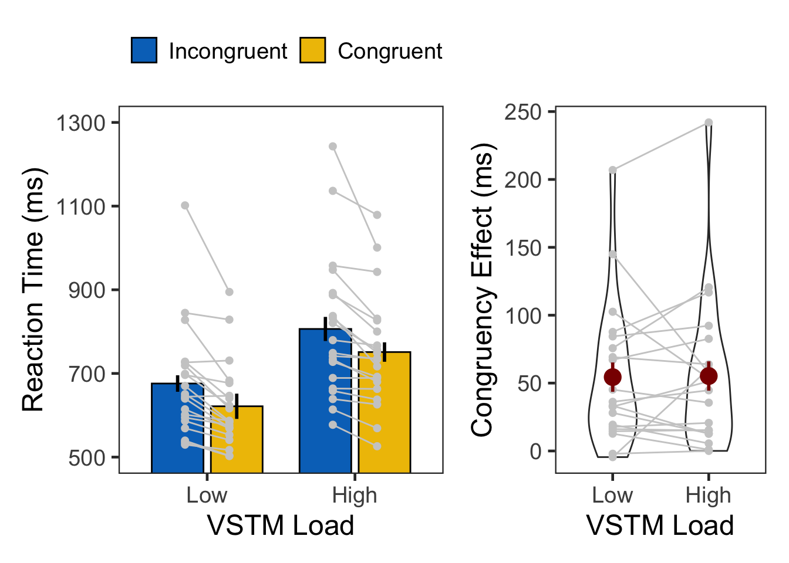

set.seed(12345) # for reproducibility
# Some packages need to be loaded. We use `pacman` as a package manager, which takes care of the other packages.
if (!require("pacman", quietly = TRUE)) install.packages("pacman")
if (!require("Rmisc", quietly = TRUE)) install.packages("Rmisc") # Never load it directly.
pacman::p_load(tidyverse, knitr,
powerAnalysis, afex, emmeans, BayesFactor,
cowplot, ggstatsplot)
pacman::p_load_gh("thomasp85/patchwork", "RLesur/klippy")
options(knitr.kable.NA = '')
options(dplyr.summarise.inform=FALSE) # 200603 supress warning in regards to regrouping
klippy::klippy()A short version of task description here.
E3 <- read.csv("data/data_vstmAS3.csv", header = T)
E3$SN <- factor(E3$SN)
E3$vstmLoad <- factor(E3$vstmLoad, levels=c(1,2), labels=c("LowLoad","HighLoad"))
E3$Congruency <- factor(E3$Congruency, levels=c(0,1), labels=c("Incongruent","Congruent"))
E3$Corr <- ifelse(E3$Targ==E3$Resp,1,0)
E3$vstmCorr <- ifelse(E3$vstmLoad=="LowLoad",1,ifelse(E3$vstmCond==E3$vstmResp,1,0))
# Description of raw data columns.
# 1. SN: participant ID
# 2. Trial: 1~192
# 3. Block: 1~4
# 4. vstmLoad: VSTM load. 1 = low, 2 = high
# 5. Targ: target type. 1 or 2
# 6. Flnk: flanker type. 1 or 2
# 7. TargPos: target position. 1~6
# 8. FlnkPos: flanker position. 1 or 2
# 9. Congruency: 0 = incongruent, 1 = congruent
# 10. Resp: 1 or 2, 7 = no response
# 11. RT: response time in second
# 12. vstmCond: change = 1 or not = 2
# 13. vstmResp: 1 or 2, 7 = no response
# 14. vstmRT: response time in second
# 15. Corr: attention task correctness, 1=correct, 0 = incorrect
# 16. vstmCorr: VSTM task correctness, 1=correct, 0 = incorrect
glimpse(E3, width=70)
## Rows: 3,840
## Columns: 16
## $ SN <fct> 1, 1, 1, 1, 1, 1, 1, 1, 1, 1, 1, 1, 1, 1, 1, 1, …
## $ Trial <int> 1, 2, 3, 4, 5, 6, 7, 8, 9, 10, 11, 12, 13, 14, 1…
## $ Block <int> 1, 1, 1, 1, 1, 1, 1, 1, 1, 1, 1, 1, 1, 1, 1, 1, …
## $ vstmLoad <fct> LowLoad, LowLoad, LowLoad, LowLoad, LowLoad, Low…
## $ Targ <int> 2, 2, 2, 1, 2, 2, 1, 2, 2, 1, 1, 1, 2, 1, 2, 2, …
## $ Flnk <int> 2, 1, 1, 1, 1, 1, 2, 2, 1, 1, 1, 2, 1, 2, 2, 1, …
## $ TargPos <int> 4, 2, 5, 5, 4, 4, 5, 6, 1, 4, 2, 4, 3, 2, 4, 3, …
## $ FlnkPos <int> 1, 2, 1, 2, 1, 2, 2, 1, 1, 2, 1, 2, 1, 1, 2, 2, …
## $ Congruency <fct> Congruent, Incongruent, Incongruent, Congruent, …
## $ Resp <int> 7, 2, 2, 1, 2, 2, 1, 2, 2, 1, 1, 1, 2, 1, 2, 2, …
## $ RT <dbl> 7.0000, 1.0790, 1.0316, 0.8276, 0.6838, 0.6928, …
## $ vstmCond <int> 1, 1, 1, 1, 1, 1, 1, 1, 2, 2, 1, 1, 1, 1, 2, 1, …
## $ vstmResp <int> 7, 7, 7, 7, 7, 7, 7, 7, 7, 7, 7, 7, 7, 7, 7, 7, …
## $ vstmRT <dbl> 7, 7, 7, 7, 7, 7, 7, 7, 7, 7, 7, 7, 7, 7, 7, 7, …
## $ Corr <dbl> 0, 1, 1, 1, 1, 1, 1, 1, 1, 1, 1, 1, 1, 1, 1, 1, …
## $ vstmCorr <dbl> 1, 1, 1, 1, 1, 1, 1, 1, 1, 1, 1, 1, 1, 1, 1, 1, …Both VSTM Load and Congruency were within-subject factors.
| 1 | 2 | 3 | 4 | 5 | 6 | 7 | 8 | 9 | 10 | 11 | 12 | 13 | 14 | 15 | 16 | 17 | 18 | 19 | 20 | |
|---|---|---|---|---|---|---|---|---|---|---|---|---|---|---|---|---|---|---|---|---|
| LowLoad | 96 | 96 | 96 | 96 | 96 | 96 | 96 | 96 | 96 | 96 | 96 | 96 | 96 | 96 | 96 | 96 | 96 | 96 | 96 | 96 |
| HighLoad | 96 | 96 | 96 | 96 | 96 | 96 | 96 | 96 | 96 | 96 | 96 | 96 | 96 | 96 | 96 | 96 | 96 | 96 | 96 | 96 |
| 1 | 2 | 3 | 4 | 5 | 6 | 7 | 8 | 9 | 10 | 11 | 12 | 13 | 14 | 15 | 16 | 17 | 18 | 19 | 20 | |
|---|---|---|---|---|---|---|---|---|---|---|---|---|---|---|---|---|---|---|---|---|
| Incongruent | 96 | 96 | 96 | 96 | 96 | 96 | 96 | 96 | 96 | 96 | 96 | 96 | 96 | 96 | 96 | 96 | 96 | 96 | 96 | 96 |
| Congruent | 96 | 96 | 96 | 96 | 96 | 96 | 96 | 96 | 96 | 96 | 96 | 96 | 96 | 96 | 96 | 96 | 96 | 96 | 96 | 96 |
vE3s <- E3 %>% filter(vstmLoad == "HighLoad") %>%
group_by(SN) %>%
summarise(vstmCorr = mean(vstmCorr)*100) %>%
ungroup()
ggplot(data=vE3s, aes(x=1, y=vstmCorr)) +
geom_violin(width = 1, trim = TRUE) +
ggbeeswarm::geom_quasirandom(dodge.width = 0.7, color = "blue", size = 3, alpha = 0.2,
show.legend = FALSE) +
stat_summary(fun.data = "mean_cl_boot", color = "darkred", size = 1) +
coord_flip(ylim = c(50, 100), clip = "on") +
labs(y = "Change Detection Accuracy") +
theme_bw(base_size = 18) +
theme(panel.grid.major = element_blank(),
panel.grid.minor = element_blank(),
axis.title.y = element_blank(),
axis.ticks.y = element_blank(),
axis.text.y = element_blank(),
aspect.ratio = .3)
The mean accuracy of the change detection task was 82.08%, which was comparable to 79.43% in the high load condition of Experiment 1.
Accuracy in the attention task was generally high. There were no significant effects in the ANOVA.
# Attention, Experiment 3, subject-level, long format
aE3slong <- E3 %>% group_by(SN, vstmLoad, Congruency) %>%
summarise(Accuracy = mean(Corr)*100) %>%
ungroup()
# Experiment 2 summary
aE3slong %>% group_by(vstmLoad, Congruency) %>%
summarise(M = mean(Accuracy), SD = sd(Accuracy)) %>%
ungroup() %>%
kable()| vstmLoad | Congruency | M | SD |
|---|---|---|---|
| LowLoad | Incongruent | 95.10417 | 5.706444 |
| LowLoad | Congruent | 96.04167 | 4.049899 |
| HighLoad | Incongruent | 91.56250 | 6.175543 |
| HighLoad | Congruent | 93.95833 | 5.098625 |
# group level, needed for printing & geom_pointrange
# Rmisc must be called indirectly due to incompatibility between plyr and dplyr.
aE3g <- Rmisc::summarySEwithin(data = aE3slong, measurevar = "Accuracy",
withinvars = c("vstmLoad", "Congruency"), idvar = "SN")
ggplot(data=aE3slong, aes(x=vstmLoad, y=Accuracy, fill=Congruency)) +
geom_violin(width = 0.7, trim=TRUE) +
ggbeeswarm::geom_quasirandom(dodge.width = 0.7, color = "gray80", size = 3, alpha = 0.4,
show.legend = FALSE) +
geom_pointrange(data=aE3g,
aes(x = vstmLoad, ymin = Accuracy-ci, ymax = Accuracy+ci, color = Congruency),
position = position_dodge(0.7), color = "darkred", size = 1, show.legend = FALSE) +
coord_cartesian(ylim = c(50, 100), clip = "on") +
labs(x = "VSTM Load",
y = "Accuracy (%)",
fill="Congruency") +
scale_x_discrete(labels=c("LowLoad" = "Low", "HighLoad" = "High")) +
scale_fill_manual(values=c('#0073C2FF','#EFC000FF'),
labels=c("Incongruent", "Congruent")) +
theme_bw(base_size = 18) +
theme(panel.grid.major = element_blank(),
panel.grid.minor = element_blank()) 
aov_ez(id = "SN", data = aE3slong, dv = "Accuracy",
within = c("vstmLoad", "Congruency")) %>%
anova(es = "pes") %>% kable(digits = 4)| num Df | den Df | MSE | F | pes | Pr(>F) | |
|---|---|---|---|---|---|---|
| vstmLoad | 1 | 19 | 21.5986 | 7.3247 | 0.2782 | 0.0140 |
| Congruency | 1 | 19 | 13.9803 | 3.9739 | 0.1730 | 0.0608 |
| vstmLoad:Congruency | 1 | 19 | 7.6640 | 1.3875 | 0.0681 | 0.2534 |
# filtering out incorrect trials
cE3 <- E3 %>% filter(Corr==1 & vstmCorr==1) %>% mutate(RT = RT*1000)
# trimming by 2.5 MAD.
rE3 <- cE3 %>% filter(RT > 200) %>%
group_by(SN) %>%
nest() %>%
mutate(lbound = map(data, ~median(.$RT)-2.5*mad(.$RT)),
ubound = map(data, ~median(.$RT)+2.5*mad(.$RT))) %>%
unnest(c(lbound, ubound)) %>%
unnest(data) %>%
mutate(Outlier = (RT < lbound)|(RT > ubound)) %>%
filter(Outlier == FALSE) %>%
ungroup %>%
select(SN, vstmLoad, Congruency, RT)
# percentage trimmed.
(nrow(cE3)-nrow(rE3))/nrow(cE3)## [1] 0.044290454.43%의 가외치가 제거되었다.
den1 <- ggplot(cE3, aes(x=RT)) +
geom_density() +
theme_bw(base_size = 18) +
theme(panel.grid.major = element_blank(),
panel.grid.minor = element_blank(),
axis.text.y = element_blank(),
axis.ticks.y = element_blank())
den2 <- ggplot(rE3, aes(x=RT)) +
geom_density() +
theme_bw(base_size = 18) +
labs(x = "Trimmed RT") +
theme(panel.grid.major = element_blank(),
panel.grid.minor = element_blank(),
axis.text.y = element_blank(),
axis.ticks.y = element_blank())
den1 + den2
# Attention RT, Experiment 1, subject-level, long format
rE3slong <- rE3 %>% group_by(SN, vstmLoad, Congruency) %>%
summarise(RT = mean(RT)) %>%
ungroup()
# Experiment 1 summary
rE3slong %>% group_by(vstmLoad, Congruency) %>%
summarise(M = mean(RT), SD = sd(RT)) %>%
ungroup() %>%
kable()| vstmLoad | Congruency | M | SD |
|---|---|---|---|
| LowLoad | Incongruent | 675.9334 | 133.5961 |
| LowLoad | Congruent | 621.5462 | 102.3060 |
| HighLoad | Incongruent | 806.3458 | 170.3584 |
| HighLoad | Congruent | 751.1414 | 136.7965 |
# Experiment 1 Congruency Effect in RT, subject-level, long format
rE3CEslong <- rE3slong %>%
spread(key = Congruency, value = RT) %>%
mutate(cEffect = Incongruent - Congruent) %>%
select(SN, vstmLoad, cEffect)
# Experiment 1 summary
rE3CEslong %>% group_by(vstmLoad) %>%
summarise(M = mean(cEffect), SD = sd(cEffect)) %>%
ungroup() %>%
kable()| vstmLoad | M | SD |
|---|---|---|
| LowLoad | 54.38719 | 52.64984 |
| HighLoad | 55.20442 | 57.18761 |
# group level, needed for printing & geom_pointrange
rE3g <- Rmisc::summarySEwithin(data = rE3slong, measurevar = "RT",
withinvars = c("vstmLoad", "Congruency"), idvar = "SN")
rE3swide <- rE3slong %>% # wide format, needed for geom_segments.
unite("temp", c("vstmLoad", "Congruency")) %>%
spread(key = temp, value = RT)
G1 <- ggplot() +
geom_bar(data=rE3g, aes(x=vstmLoad, y=RT, fill=Congruency),
stat="identity", width=0.7, color="black", position=position_dodge(.8)) +
geom_linerange(data=rE3g, aes(x=vstmLoad, ymin=RT-ci, ymax=RT+ci, group=Congruency),
size=1, position=position_dodge(0.8)) +
scale_fill_manual(values=c('#0073C2FF','#EFC000FF'),
labels=c("Incongruent", "Congruent")) +
geom_point(data=rE3slong, aes(x=vstmLoad, y=RT, group=Congruency),
position=position_dodge(0.6), color="gray80", size=1.8) +
geom_segment(data=rE3swide, aes(x=1-.15, y=LowLoad_Incongruent,
xend=1+.15, yend=LowLoad_Congruent),
color="gray80") +
geom_segment(data=rE3swide, aes(x=2-.15, y=HighLoad_Incongruent,
xend=2+.15, yend=HighLoad_Congruent),
color="gray80") +
labs(x = "VSTM Load", y = "Reaction Time (ms)") +
scale_x_discrete(labels=c("LowLoad" = "Low", "HighLoad" = "High")) +
coord_cartesian(ylim = c(500, 1300), clip = "on") +
scale_y_continuous(breaks=c(500,700,900,1100,1300)) +
theme_bw(base_size = 18) +
theme(legend.position="top",
legend.spacing.x = unit(0.5, 'lines'),
legend.title = element_blank(),
legend.background = element_blank(),
panel.grid.major = element_blank(),
panel.grid.minor = element_blank())
# group level, needed for printing & geom_pointrange
rE3CEg <- Rmisc::summarySEwithin(data = rE3CEslong, measurevar = "cEffect",
withinvars = "vstmLoad", idvar = "SN")
# wide format, needed for geom_segments.
rE3CEswide <- rE3CEslong %>% spread(key = vstmLoad, value = cEffect)
G2 <- ggplot(rE3CEslong, aes(x=vstmLoad, y=cEffect)) +
geom_violin(width = 0.5, trim=TRUE) +
geom_point(color="gray80", size=1.8) +
geom_segment(data=rE3CEswide, color="gray80",
aes(x=1, y=LowLoad, xend=2, yend=HighLoad)) +
geom_pointrange(rE3CEg, inherit.aes=FALSE,
mapping=aes(x = vstmLoad, y=cEffect,
ymin = cEffect - ci, ymax = cEffect + ci),
colour="darkred", size = 1)+
# labs(x = "VSTM Load", y = "Congruency Effect \n (Incongruent - Congruent)") +
labs(x = "VSTM Load", y = "Congruency Effect (ms)") +
scale_x_discrete(labels=c("LowLoad" = "Low", "HighLoad" = "High")) +
theme_bw(base_size = 18) +
theme(panel.grid.major = element_blank(),
panel.grid.minor = element_blank())
# Multipanel plot
G1 + G2 + plot_layout(nrow = 1, widths = c(2, 1.3))
rt.aov <- aov_ez(id = "SN", dv = "RT", data = rE3, within = c("vstmLoad", "Congruency"))
rt.aov %>% anova(es = "pes") %>% kable(digits = 4)| num Df | den Df | MSE | F | pes | Pr(>F) | |
|---|---|---|---|---|---|---|
| vstmLoad | 1 | 19 | 6117.2673 | 55.2567 | 0.7441 | 0.0000 |
| Congruency | 1 | 19 | 2755.2517 | 21.7953 | 0.5343 | 0.0002 |
| vstmLoad:Congruency | 1 | 19 | 265.9622 | 0.0126 | 0.0007 | 0.9120 |
| contrast | vstmLoad | estimate | SE | df | t.ratio | p.value |
|---|---|---|---|---|---|---|
| Incongruent - Congruent | LowLoad | 54.38719 | 12.29068 | 22.63425 | 4.425078 | 0.0002016 |
| Incongruent - Congruent | HighLoad | 55.20442 | 12.29068 | 22.63425 | 4.491570 | 0.0001710 |
ANOVA에서 BF를 쓰려면 여러가지 복잡한 사안들을 결정해야 한다. 본 연구의 가설은 congruency effect에 집중하는 만큼, low load와 high load의 차이만 비교하기로 한다.
rE3CEswide$CongEffDiff <- rE3CEswide$LowLoad - rE3CEswide$HighLoad
( bf <- ttestBF(x = rE3CEswide$CongEffDiff) )## Bayes factor analysis
## --------------
## [1] Alt., r=0.707 : 0.2336504 ±0.02%
##
## Against denominator:
## Null, mu = 0
## ---
## Bayes factor type: BFoneSample, JZS## Bayes factor analysis
## --------------
## [1] Null, mu=0 : 4.279898 ±0.02%
##
## Against denominator:
## Alternative, r = 0.707106781186548, mu =/= 0
## ---
## Bayes factor type: BFoneSample, JZSsessionInfo()
## R version 4.0.2 (2020-06-22)
## Platform: x86_64-apple-darwin17.0 (64-bit)
## Running under: macOS High Sierra 10.13.6
##
## Matrix products: default
## BLAS: /Library/Frameworks/R.framework/Versions/4.0/Resources/lib/libRblas.dylib
## LAPACK: /Library/Frameworks/R.framework/Versions/4.0/Resources/lib/libRlapack.dylib
##
## locale:
## [1] en_US.UTF-8/en_US.UTF-8/en_US.UTF-8/C/en_US.UTF-8/en_US.UTF-8
##
## attached base packages:
## [1] stats graphics grDevices utils datasets methods base
##
## other attached packages:
## [1] klippy_0.0.0.9500 patchwork_1.0.1 ggstatsplot_0.6.0
## [4] cowplot_1.1.0 BayesFactor_0.9.12-4.2 coda_0.19-3
## [7] emmeans_1.5.1 afex_0.28-0 lme4_1.1-23
## [10] Matrix_1.2-18 powerAnalysis_0.2.1 knitr_1.29
## [13] forcats_0.5.0 stringr_1.4.0 dplyr_1.0.2
## [16] purrr_0.3.4 readr_1.3.1 tidyr_1.1.2
## [19] tibble_3.0.3 ggplot2_3.3.2 tidyverse_1.3.0
## [22] Rmisc_1.5 plyr_1.8.6 lattice_0.20-41
## [25] pacman_0.5.1
##
## loaded via a namespace (and not attached):
## [1] estimability_1.3 multcomp_1.4-13
## [3] data.table_1.13.0 rpart_4.1-15
## [5] inline_0.3.16 generics_0.0.2
## [7] callr_3.4.4 TH.data_1.0-10
## [9] correlation_0.3.0 xml2_1.3.2
## [11] lubridate_1.7.9 httpuv_1.5.4
## [13] StanHeaders_2.21.0-6 assertthat_0.2.1
## [15] WRS2_1.1-0 xfun_0.17
## [17] hms_0.5.3 evaluate_0.14
## [19] promises_1.1.1 tidyBF_0.3.0
## [21] fansi_0.4.1 dbplyr_1.4.4
## [23] readxl_1.3.1 DBI_1.1.0
## [25] htmlwidgets_1.5.1 reshape_0.8.8
## [27] kSamples_1.2-9 stats4_4.0.2
## [29] Rmpfr_0.8-1 paletteer_1.2.0
## [31] ellipsis_0.3.1 rcompanion_2.3.25
## [33] backports_1.1.10 V8_3.2.0
## [35] insight_0.9.6 ggcorrplot_0.1.3
## [37] RcppParallel_5.0.2 libcoin_1.0-6
## [39] vctrs_0.3.4 abind_1.4-5
## [41] withr_2.2.0 metaBMA_0.6.3
## [43] bdsmatrix_1.3-4 checkmate_2.0.0
## [45] prettyunits_1.1.1 fastGHQuad_1.0
## [47] cluster_2.1.0 crayon_1.3.4
## [49] labeling_0.3 pkgconfig_2.0.3
## [51] SuppDists_1.1-9.5 nlme_3.1-149
## [53] vipor_0.4.5 statsExpressions_0.5.0
## [55] nnet_7.3-14 rlang_0.4.7
## [57] lifecycle_0.2.0 miniUI_0.1.1.1
## [59] LaplacesDemon_16.1.4 MatrixModels_0.4-1
## [61] sandwich_2.5-1 EMT_1.1
## [63] modelr_0.1.8 cellranger_1.1.0
## [65] matrixStats_0.56.0 broomExtra_4.0.6
## [67] lmtest_0.9-38 loo_2.3.1
## [69] mc2d_0.1-18 carData_3.0-4
## [71] boot_1.3-25 zoo_1.8-8
## [73] reprex_0.3.0 base64enc_0.1-3
## [75] beeswarm_0.2.3 processx_3.4.4
## [77] png_0.1-7 PMCMRplus_1.5.0
## [79] parameters_0.8.5 dunn.test_1.3.5
## [81] ggExtra_0.9 blob_1.2.1
## [83] multcompView_0.1-8 coin_1.3-1
## [85] jpeg_0.1-8.1 ggsignif_0.6.0
## [87] scales_1.1.1 memoise_1.1.0
## [89] magrittr_1.5 compiler_4.0.2
## [91] rstantools_2.1.1 bbmle_1.0.23.1
## [93] RColorBrewer_1.1-2 cli_2.0.2
## [95] lmerTest_3.1-2 pbapply_1.4-3
## [97] ps_1.3.4 TMB_1.7.18
## [99] Brobdingnag_1.2-6 htmlTable_2.1.0
## [101] Formula_1.2-3 MASS_7.3-53
## [103] mgcv_1.8-33 tidyselect_1.1.0
## [105] stringi_1.5.3 highr_0.8
## [107] yaml_2.2.1 latticeExtra_0.6-29
## [109] ggrepel_0.8.2 bridgesampling_1.0-0
## [111] grid_4.0.2 tools_4.0.2
## [113] lmom_2.8 parallel_4.0.2
## [115] rio_0.5.16 rstudioapi_0.11
## [117] foreign_0.8-80 gridExtra_2.3
## [119] ipmisc_3.2.0 gld_2.6.2
## [121] pairwiseComparisons_2.0.1 farver_2.0.3
## [123] digest_0.6.25 shiny_1.5.0
## [125] nortest_1.0-4 BWStest_0.2.2
## [127] Rcpp_1.0.5.2 car_3.0-9
## [129] broom_0.7.0.9001 metafor_2.4-0
## [131] ez_4.4-0 performance_0.5.0
## [133] metaplus_0.7-11 later_1.1.0.1
## [135] httr_1.4.2 effectsize_0.3.3
## [137] colorspace_1.4-1 rvest_0.3.6
## [139] fs_1.5.0 splines_4.0.2
## [141] statmod_1.4.34 rematch2_2.1.2
## [143] expm_0.999-5 Exact_2.0
## [145] xtable_1.8-4 gmp_0.6-0
## [147] jsonlite_1.7.1 nloptr_1.2.2.2
## [149] rstan_2.21.2 zeallot_0.1.0
## [151] modeltools_0.2-23 R6_2.4.1
## [153] broom.mixed_0.2.6 Hmisc_4.4-1
## [155] pillar_1.4.6 htmltools_0.5.0
## [157] mime_0.9 glue_1.4.2
## [159] fastmap_1.0.1 minqa_1.2.4
## [161] class_7.3-17 codetools_0.2-16
## [163] pkgbuild_1.1.0 mvtnorm_1.1-1
## [165] utf8_1.1.4 numDeriv_2016.8-1.1
## [167] curl_4.3 ggbeeswarm_0.6.0
## [169] DescTools_0.99.38 gtools_3.8.2
## [171] magick_2.4.0 logspline_2.1.16
## [173] zip_2.1.1 openxlsx_4.2.2
## [175] survival_3.2-3 rmarkdown_2.3
## [177] munsell_0.5.0 e1071_1.7-3
## [179] haven_2.3.1 reshape2_1.4.4
## [181] gtable_0.3.0 bayestestR_0.7.2